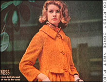
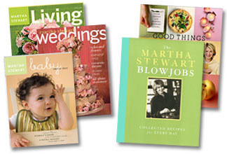
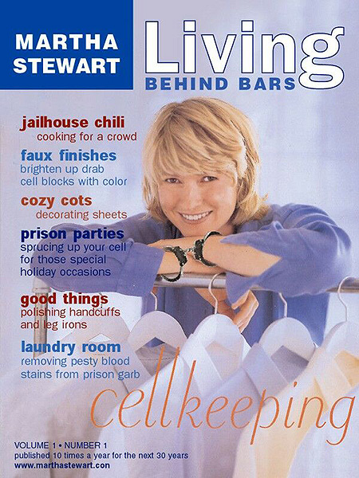

|
Martha Stewart"My dream now, in retrospect then, was to be an eclectic knowledge-gathering person - in order to be able to learn and then to teach. And I'm still doing that, so I think I am a teacher." Don't people have anything better to do than harass Martha Stewart or write extended essays about the vastness of her worldwide enterprise? Without Stewart's guidance, most people would never consider adding Scope or common household Listerine to their bongs. But by doing so, each inhale grows mintier and more evenly mentholated than the last. Mouthwash serves to fully neutralize odors found lurking in tubes of glass, plastic, even wood - and it can actually make the monthly cleaning process easier. Furthermore, as you smoke, each puff is drawn through a network of chemicals which prevent precious particulate matter from adhering to the bong's inner walls. You'll aspirate more dope, get five times higher - and that really is a good thing! So quit your bitching and give her a chance. Martha Kostyra was born in 1941. Her father was a self-absorbed, alcoholic salesman who sometimes worked as a gym coach. His temper made him the most powerful force in her life, setting standards of excellence and intolerance which became dominant characteristics of her own personality. Her mother was a cold, disengaged housewife who got married due to - ahem - an unwanted pregnancy. When food was served, Martha and her siblings were forced to eat. A disturbing childhood marked by parental tension, overwhelming resentment and freshly-baked English muffins is all anyone really needs to know about how Martha Stewart got where she is today. In college, Stewart set out to study chemistry - but that proved just a lit-tle too boring. She switched to Art, with an emphasis on European history and architecture. When those subjects proved equally boring, she married a lawyer and tried to become a model. She did television commercials for Breck hair spray, Lady Clairol, Lifebuoy soaps and Tareyton cigarettes. In 1965, after modeling proved to be too much of a challenge - she became a mother herself after giving birth to a little girl. Two years later, Stewart changed her mind again. She set up shop as a stockbroker (her father-in-law's profession) but quit in 1973, after signs that Wall Street was about to experience a brief recession. In 1976, she became a caterer. Jesus Christ! Make up your mind, lady! No wonder everyone wants to hate her. She burned through money faster than a desperate, afghan-wearing soccer mom trying to sell beaded jewelry and fiber art at the mall. However - her catering business was successful! In ten short years, she'd accumulated one million dollars! Wow! Then her husband left her, and married one of her former flower consultants. But instead of turning to drugs or alcohol to combat the impending sense of loss, Martha coupled with K-Mart, a struggling retailer with whom she partnered to bring towels, tablecloths, and a warmer sense of style to poor people everywhere. Shortly after their blessed union, K-Mart went bankrupt.
In the exposé Martha Inc., veteran financial writer Christopher Byron characterized Stewart as an extremely short-tempered whore whose attitude grows worse with each passing day. "In essence, the book reads like a litany of horrors," says BusinessWeek associate editor Diane Brady. "This is a woman whose career path to success is strewn with carcasses." Place a miniature marshmallow at the bottom of a sugar cone to eliminate ice cream drips. Suck your husband's cock each and every morning to prevent divorce proceedings or a broken neck. Chopped-up body parts clogging your bathtub? Pour 1/4 cup of baking soda down the drain, add three tablespoons of vinegar. Flush with boiling water, and keep paper towels nearby to absorb the frothy, gurgling backwash. Stewart is now 61 years old. Everything about the former model has come to resemble the prissy, uptight customers often observed lingering like storks at the Neiman Marcus cosmetics counter. She barks instructions at employees like a nun with a yardstick. No manner of adornment or decoration is ever quite good enough, and she regularly exhibits a level of self-hatred bordering on autoerotic self-sadomasochism. On June 4, 2003, Stewart was named in a nine-count indictment charging her with obstruction of justice and lying to federal investigators in connection with a government probe of insider trading of ImClone stock. Already a multi-millionaire, Martha allegedly walked away from this sale with $229,000 and avoided losses estimated at $45,673. The charges carried penalties of up to 10 years in jail. The subpoena was served up with crispity, crunchety, peanut-buttery asparagus panzanella, and both Stewart and her former stockbroker pleaded not guilty. Hours later, Martha had resigned as chairman and CEO of Omnimedia and criminal proceedings kicked into high gear. The prosecutions's case centered around Stewart's propensity to lie repeatedly to members of the FBI, the SEC, and the U.S. Attorney working out of New York. That very afternoon, Omnimedia (NASDAQ:MSO), plummeted 15 percent, losing $1.68 to $9.52. Meanwhile, ImClone shares soared 18 percent (closing at $33.55) due to optimism over Erbitux, an upcoming cancer treatment product slated for over-the-counter distribution and release sometime within the next two hundred thousand years. So Martha Stewart sold a handful of stocks. Big deal. Whether she cooked the books or sauteed them with fresh Austrian cantaloupe leaves to lay across the skin of pearl mink soup, it's of little consequence. It's not like she was caught concealing missiles from weapons inspectors. Who did she personally injure by acting on a hot tip offered up by a close, personal friend? Everybody does that, for crying out loud. That's how brokers are supposed to operate. Traders and bondsworkers who disregard reasonably credible rumors (which later turn out to be financially lucrative) are fired. It was clear to Stewart's lawyers that homemade potpourri made from fresh orange peel and sun-dried raspberries couldn't mask the frightening aroma of impending doom. They accused the government of bringing the case "because [Stewart] is a woman who has successfully competed in a man's business world by virtue of her talent, hard work and demanding standards," and that the case exists only because of her celebrity status But this case isn't a war against Martha Stewart - it's a war against festive linens and decorative Thanksgiving centerpieces adorned with pumpkin spice candles. A lot of people just love that shit. If you go to your girlfriend's house and the whole place smells like the coffee counter at Cost Plus or Pier 1 Imports -- guess what? She's getting laid tonight. In times of war, America has a proven history of hauling out propaganda meant to illustrate how useful and productive women can be if they'd just stay home. Give them something to do, for Christ's sake. Show them Rosie the Riveter balling up her pantyhose or recycling bobbypins. Show them how Pringles cans stuffed with toilet paper make for a cheaper alternative to tampons. Give the good people of the United States a gentle muscle relaxant like Martha Stewart and stop protesting every goddamn thing in the universe. A pudding isn't a pudding without a little spilt milk. Martha is unlikely to serve any jail time. She's never going to play mommy dyke in a pretty, poshly-decorated cell. Nor will she bake multi-layered tiramisu with a nail file hidden inside. This blemish on Stewart's career will be equal in value to the scandals which briefly flew in the face of Kato Kaelin, Donna Rice, Mike Lookinland - or any celebrity in recent memory who's navigated his or her way around justice. It's a stain functionally equivalent to drippy, spicy salsa or a splop of chocolate ice cream down the front of a blue smock. Only Ivory soap (with its mild, neutral pH) and a horsehair bristlebrush has the power to make everything come clean. Timeline
|
 It
really is a Cinderella story. Stewart's had more influence on how Americans
eat, entertain, and decorate their homes than any one woman in the nation's
history. She became one of America's wealthiest women by taking her
It
really is a Cinderella story. Stewart's had more influence on how Americans
eat, entertain, and decorate their homes than any one woman in the nation's
history. She became one of America's wealthiest women by taking her